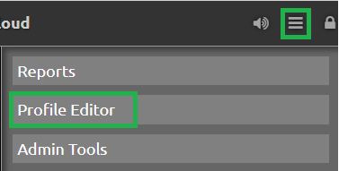
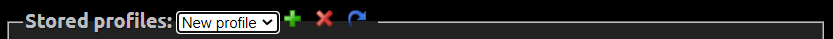
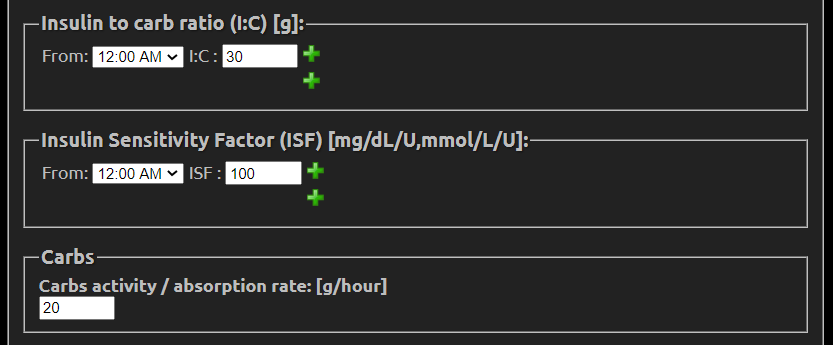

Setup your Profile
{kind=link}
The top part will show your site settings: Title, Units and Date Format.
{kind=link}
Profile view
Profile Editor will display your active profile. If you created more than one profile you can select the one you want with the drop down menu Stored Profiles.
You can add a profile with +, delete it with X and duplicate (clone) it to create a new one starting with the values in the current one.
Note: changing profile selection keeps the modifications you’ve made in other profiles.
{kind=link}
Each profile has a Name, a Timezone and a DIA that you can modify. If you don’t know which DIA to use, ask you endocrinologist since this is a complex subject. See also here.
{kind=link}
For each profile you can define Insulin to carb ratio (I:C), Insulin sensitivity factor (ISF) and Carbs absorption rate. Both I:C and ISF can be defined for specific times of the day by slices of 30 minutes, click the + sign to add another interval.
These values are key to diabetes management. Ask your endocrinologist about them if you don’t know where to start.
Look here for calculating the carbs absorption rate.
{kind=link}
If your uploader doesn’t send pump basal values to Nightscout, you can duplicate the information in Basal rates in order to match your current basal profile (and Nightscout is also a nice place to save this information). Basal rates can be defined by 30 minutes intervals, click + to add another one .
{kind=link}
You can also define your Target BG range Low and High for various moments of the day.
{kind=link}
After you defined your profile you need to Authenticate with your API Secret in order to be able to save it.
For modifications, read the next paragraph and make sure you understand the Database records mechanism.
{kind=link}
Modifying a profile and Database records
When you modify a profile and save it, the whole database record will be updated to reflect the profile change. This means all periods of time using this specific profile since the database record Valid time and date will be updated to your profile modification. If you don’t want this to happen, you should create a new database record and recreate your profiles in this new record.
You can add a record with +, delete one with X (it will delete the corresponding profiles information in the time frame of the record) and duplicate (clone) it.
{kind=link}